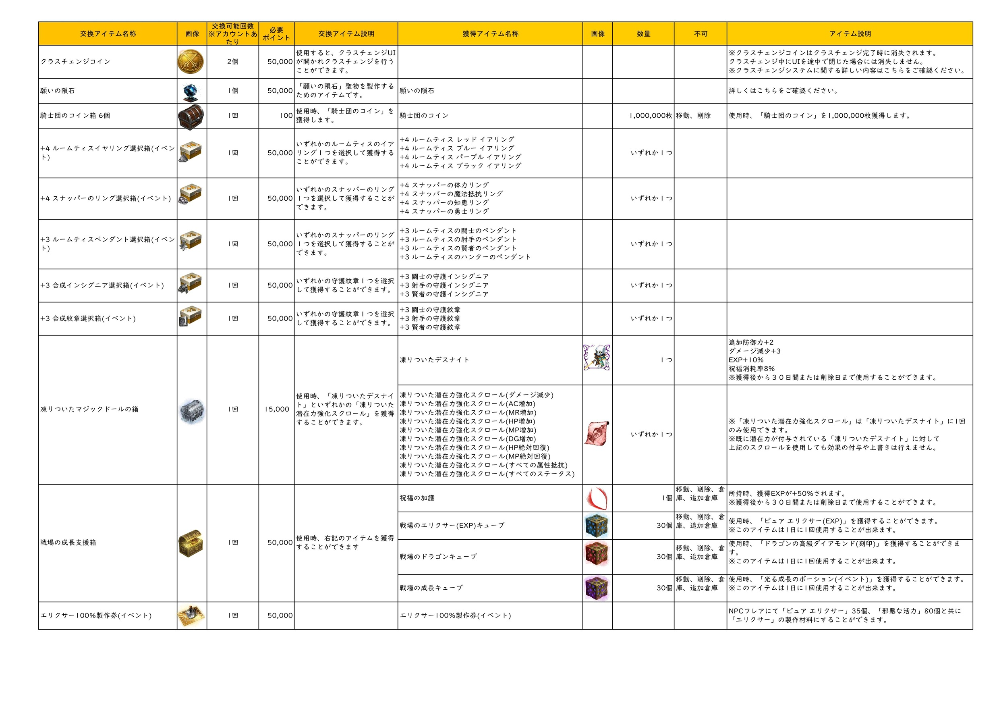

更新 2025年10月28日
モンスター一覧表：狩り場図鑑見直し
2024.11.20「騎士道」、2025.03.19「UNLIMIT」、2025.07.23「GLORY」アップデートなどの反映。
追加モンスター:40
アデン大陸
グリッド キング ボス(★),
貪欲の原罪 グリッド キング ボス(★)
アントクイーンの隠れ処
エルシャベ
シーレンの神殿
シーレンの武官,
シーレンの巫女,
シーレンの司祭,
シーレンの騎士,
シーレンの兵士
シーレンの神殿地下
真紅の狙撃手,
真紅の巫女,
真紅の司祭,
真紅の騎士,
シーレンの兵士,
真紅の神官
ヘオス前哨基地
忘却の演奏者,
魂のネクロマンサー,
忘却のディエゴ,
忘却のスピリッド,
タランチュラ,
イビル フェンサー,
スケルトン アックスマン,
忘却のアリオク,
混沌のケルベロス ボス(★),
レイブン ランサー,
忘却の魔女,
腐敗の司祭,
闇のネクロマンサー,
忘却のレイブン キング,
死滅のデスナイト ボス(★),
スケルトン マークスマン,
サーベル タイガー,
忘却のリザード,
サラマンダー,
スケルトン パイクマン,
レイブン メイジ,
イビル ブレイズ,
レイブン アーチャー,
ペルティア ガルーダ,
マンドラゴラ,
イビル クラッシャー
変更修正モンスター:242
アデン大陸
サンドワーム ボス(★)(アイテム),
オルクス ボス(★)(アイテム),
カーツ ボス(★)(アイテム),
リカント ボス(★)(アイテム),
ドッペルゲンガー ボス ボス(★)(アイテム),
バンディット ボス ボス(★)(アイテム),
疾風のシャスキー ボス(★)(アイテム),
狂風のシャスキー ボス(★)(アイテム)
アンタラス生息地
アンタラス ボス(★)(アイテム)
アントクイーンの隠れ処
エルシャベ(ステータス/アイテム),
クイーン センチュリオン(アイテム)
エルフの森のダンジョン3階
地の精霊のガーディアン(アイテム)
エルモア激戦地
エルモア ウィザード(アイテム),
エルモア ウィザード(アイテム)
エヴァ王国
潜んでいるカープ(アイテム)
エヴァ王国水路1階
ジャイアント ラット(アイテム)
エヴァ王国水路2階
ニュートリア(アイテム)
エヴァ王国水路3階
リザード ウィザード(アイテム),
リザード ウォリアー(アイテム)
オークの集落
フォノス オーク ソードマン(アイテム)
オーレン雪山
アイス ゴーレム(アイテム),
ビッグフット マーヨ ボス(★)(アイテム)
ギラン監獄2階
看守長 タロス ボス(★)(アイテム)
シルバーナイトタウンのダンジョン4階
殺気に満ちたアーチャー(アイテム),
エルジェン ボス(★)(アイテム)
ドラゴンバレー
グレート ブラック エルダー ボス(★)(アイテム),
ゼロス ボス(★)(アイテム),
フランティック スケルトン マークスマン(アイテム),
クールヘッド スケルトン マークスマン(アイテム),
フランティック スケルトン ファイター(アイテム),
ジャイアント コカトリス(アイテム)
ドラゴンバレー ダンジョン4階
地竜のサキュバス(アイテム)
ドラゴンバレー ダンジョン5階
地竜のサキュバス(アイテム)
ドラゴンバレー ダンジョン6階
地竜のエリート ソルジャー(アイテム),
地竜のサキュバス(アイテム),
地竜のサキュバス クイーン(アイテム)
ドラゴンバレー ダンジョン7階
アクモ ボス(★)(アイテム)
ドラゴンバレー海岸
ジャイアントドレイク ボス(★)(アイテム),
ドレイク(アイテム),
渓谷のオーガ(アイテム)
ハイネの森
ジュラカ(アイテム)
パプリオンの棲息地
パプリオン ボス(★)(アイテム)
ブラック バトルシップ2階
ブラックナイト近衛兵(アイテム)
ブラック バトルシップ3階
ブラックナイト ガーディアン(アイテム)
メインランドのダンジョン4階
セマ ボス(★)(アイテム),
メルキオール ボス(★)(アイテム),
カスパー ボス(★)(アイテム),
バルタザール ボス(★)(アイテム)
メインランドのダンジョン6階
ネクロマンサー ボス(★)(アイテム)
メインランドのダンジョン7階
デスナイト ボス(★)(アイテム),
デスナイト ボス(★)(アイテム),
デスナイト ボス(★)(アイテム)
ユニコーンテンプル
風の大精霊(アイテム),
地の大精霊(アイテム),
夢幻のベネボス(アイテム)
ユニコーンテンプルBOOST
風の大精霊(アイテム),
地の大精霊(アイテム)
リンドビオル棲息地
リンドビオル ボス(★)(アイテム)
ルウン城
剣鬼 ボス(★)(ステータス/アイテム),
ルウン3世 ボス(★)(アイテム),
変面ピエロ ボス(★)(ステータス/アイテム),
偵察団長 ボス(★)(アイテム),
監視者のルウン人形(アイテム),
幹部のルウン人形(アイテム),
奇怪博士 ボス(★)(アイテム)
ヴァラカス棲息地
ヴァラカス ボス(★)(アイテム)
暗黒竜のダンジョン1階
ダーク ドッペルゲンガー(アイテム)
暗黒竜のダンジョン2階
ダーク ドッペルゲンガー(アイテム),
憤怒のバルログ ボス(★)(アイテム)
暗黒竜の傷跡
ヘルクリーチャー(アイテム),
ダークロード ボス(★)(アイテム)
隠されたエヴァ王国水路
リザード ウォリアー(アイテム),
リザード ウィザード(アイテム)
隠されたエヴァ王国水路Boost
リザード ウィザード(アイテム),
リザード ウォリアー(アイテム)
隠された見棄てられた者たちの地Boost
見棄てられたソルジャー(アイテム),
見棄てられたダークウィザード(アイテム)
火竜の棲処
ラヴァ ゴーレム(アイテム),
バーニング ウォリアー(アイテム),
フェニックス ボス(★)(アイテム),
イフリート ボス(★)(アイテム),
ラヴァ ゴーレム(分身)(アイテム),
火竜のガーディアン(アイテム)
乾いた砂漠
スコーピオン(アイテム),
サンド スコーピオン(ステータス)
古代巨人の墓
ジャイアント グレイブ ガーディアン(アイテム)
古代神の寺院
歪みのアーチャー(アイテム),
歪みのデーモン(アイテム),
歪みのウギル(アイテム),
歪みの支配者(アイテム),
歪みのウォーウルフ(アイテム),
歪みの監視者(アイテム),
歪みのクルータ(アイテム),
歪みの捕食者(アイテム)
古代精霊の墓
風の精霊(アイテム),
精霊監視者 ボス(★)(アイテム),
水の精霊(アイテム),
マンボ キング ボス(★)(アイテム)
極寒の神殿
アイスクイーン ボス(★)(アイテム),
アイス デーモン ボス(★)(アイテム)
極寒の神殿(HARD)
アイス デーモン ボス(★)(アイテム),
アイスクイーン ボス(★)(アイテム),
アイス マンボ ラビット ボス(★)(アイテム)
支配の塔1階
ディストーション ゼニス クイーン ボス(★)(ステータス/アイテム)
支配の塔2階
ミストラスト シアー ボス(★)(ステータス/アイテム)
支配の塔3階
ホラー イフリート(アイテム),
フィア バンパイア ボス(★)(ステータス/アイテム)
支配の塔4階
デス ゾンビ ロード ボス(★)(ステータス/アイテム),
デス ゴースト(アイテム),
デス クリーチャー(アイテム)
支配の塔5階
ヘル フォフス(ステータス),
ヘル スプレッド(ステータス),
ヘル クーガー ボス(★)(ステータス/アイテム),
ヘル ボーンドラゴン(アイテム),
ヘル ドーベルマン(アイテム)
支配の塔6階
イモータル マミー ロード ボス(★)(ステータス/アイテム),
イモータル ニ バス(ステータス),
イモータル カルビス(ステータス),
イモータル サンド ソルジャー(アイテム),
イモータル サンド ウィザード(アイテム)
支配の塔7階
ブルータル メイド(ステータス),
ブルータル アイリス ボス(★)(ステータス/アイテム),
ブルータル アイスマン(ステータス)
支配の塔8階
ダーク アーマー ナイト(ステータス),
ダーク ナイトバルド ボス(★)(ステータス/アイテム),
ダーク ミノタウロス(ステータス)
支配の塔9階
不滅の信徒(ステータス),
フォーエバー リッチ ボス(★)(ステータス/アイテム),
不滅の司祭(ステータス/アイテム)
支配の塔10階
パート ウグヌス ボス(★)(ステータス/アイテム),
パート デビルマン(ステータス),
パート レッサーデーモン(ステータス),
パート アスモデウス(ステータス),
パート サキュバス クイーン(アイテム),
パート クリムゾン(ステータス)
支配の塔最上階
デス グリムリーパー ボス(★)(ステータス/アイテム),
ゾンビ ロード(アイテム),
リッチ(アイテム),
ウグヌス(アイテム),
ナイトバルド(アイテム),
ゼニス クイーン(アイテム),
シアー(アイテム),
バンパイア(アイテム),
マミー ロード(アイテム),
クーガー(アイテム),
アイリス(アイテム)
死の廃墟
バグベアー(アイテム)
象牙の塔4階
ダンシング ソード(アイテム)
象牙の塔5階
隠された ハーディンの分身 ボス(★)(アイテム)
象牙の塔6階
隠された ハーディンの分身 ボス(★)(アイテム),
デーモン ゴーレム(アイテム),
デーモンの司祭(アイテム)
象牙の塔7階
隠された ハーディンの分身 ボス(★)(アイテム),
デーモン ボス(★)(アイテム),
デーモンの司祭(アイテム)
風竜の棲処
ワイバーン(アイテム),
マイノ シャーマン ボス(★)(アイテム),
風竜のセターレン (アイテム)
忘れられた島
ミノタウロス(アイテム),
ミノタウロス(アイテム),
ブルート(アイテム),
ハーピー(アイテム),
ラミア(アイテム),
ラミア(アイテム),
ウェアウルフ(アイテム),
ライカンスロープ(アイテム),
ライカンスロープ(アイテム),
キング バグベアー(アイテム),
ガースト(アイテム),
ガースト ロード(アイテム),
バグベアー(アイテム),
サイクロプス(ステータス/アイテム),
グリフォン(アイテム),
コカトリス(アイテム),
グレート ミノタウロス ボス(★)(アイテム),
キング バグベアー(アイテム),
バシリスク(アイテム),
ドレッドスパイダー(アイテム),
ガースト ロード(アイテム),
ラミア(アイテム),
サイクロプス(アイテム),
ラミア(ステータス/アイテム),
ドッペルゲンガー(アイテム),
キング バグベアー(アイテム),
ミノタウロス(アイテム),
ジャイアント クロコダイル(アイテム),
ダークエルフ(アイテム),
ドレイク(アイテム),
バグベアー(アイテム),
ウェアウルフ(アイテム),
ライカンスロープ(アイテム),
ガースト(アイテム),
ミノタウロス(アイテム),
アリゲーター(アイテム),
ブルート(アイテム)
話せる島ダンジョン2階
ドレッドスパイダー(アイテム),
腐食したスケルトン ガード(アイテム)
話せる島フィールド
オーク(アイテム),
ジャイアント スパイダー(アイテム),
ブラックナイト(アイテム)
傲慢の塔1階
ディストーション ゼニス クイーン (分身) ボス(★)(アイテム),
リベリオン ジルレタ(アイテム),
ディストーション ドレッドスパイダー(アイテム)
傲慢の塔2階
ミストラスト シアー (分身) ボス(★)(アイテム),
リベリオン ブルート(アイテム)
傲慢の塔3階
フィア バンパイア (分身) ボス(★)(アイテム),
リベリオン インキュバス(アイテム)
傲慢の塔4階
デス ゾンビ ロード (分身) ボス(★)(アイテム),
リベリオン ウォーカー(アイテム)
傲慢の塔5階
ヘル クーガー (分身) ボス(★)(アイテム),
ヘル ドーベルマン(アイテム),
ヘル ボーンドラゴン(アイテム),
リベリオン スプレッド(ステータス/アイテム)
傲慢の塔6階
イモータル マミー ロード (分身) ボス(★)(アイテム),
リベリオン カルビス(ステータス/アイテム)
傲慢の塔7階
マーシレス アイリス (分身) ボス(★)(アイテム),
ブルータル バーニング アーチャー(アイテム),
リベリオン アイスマン(ステータス/アイテム)
傲慢の塔8階
ダーク ナイトバルド (分身) ボス(★)(アイテム),
リベリオン アーマー ナイト(ステータス/アイテム)
傲慢の塔9階
フォーエバー リッチ (分身) ボス(★)(アイテム),
リベリオン プリースト(ステータス/アイテム)
傲慢の塔10階
パート ウグヌス (分身) ボス(★)(アイテム),
パート アスモデウス(ステータス),
パート クリムゾン(ステータス),
リベリオン レッサー デーモン(ステータス/アイテム)
傲慢の塔最上階
デス グリムリーパー ボス(★)(アイテム),
死神のサキュバス(ステータス/アイテム),
死神のゴースト(アイテム),
死神の監視者(アイテム),
死神のイフリート(アイテム),
監視者ゼニス クイーン(アイテム),
監視者シアー(アイテム),
監視者アイリス(アイテム),
監視者ウグヌス(ステータス/アイテム),
監視者ゾンビ ロード(アイテム),
監視者リッチ(ステータス/アイテム),
監視者クーガー(アイテム),
監視者ナイトバルド(アイテム)
傲慢の塔地下神殿
神殿のプリースト(ステータス),
神殿のハイプリースト(ステータス),
カヘル ヤヒ ボス(★)(アイテム)
更新 2025年09月26日
諸表：アクセサリー強化性能表(インシグニア表)訂正
賢者の守護インシグニア：訂正
強化＋５～＋８近距離命中漏れのため追加
単独アイテムの確認用モーダル表示
インシグニアで先行試験にモーダル表示
更新 2025年09月18日
諸表に新規掲載：勇猛のメダル交換スキル入手性表
勇猛のメダル交換スキルのdropと購入可不可を追記した表
8ページのpdfと各ページのpng画像を掲載


更新 2025年09月17日
諸表：勇猛のメダル交換表2025年9月期更新
2025年9月17日(水)定期メンテナンス後～2025年12月24日(水)定期メンテナンス前開催。イベント告知の内容差し替え。
交換アイテムに以下のスキルが復活されました。2025年2月期以来ラインナップとレートは同じ。
魔法書(グレイス)(刻印)(1500枚)、魔法書(マジェスティ)(刻印)(3000枚)、技術書(アブソルート ブレイド)(刻印)(600枚)、技術書(リダクション アーマー：ベテラン)(刻印)(1500枚)、技術書(エクセレント ソード)(刻印)(4500枚)、精霊の水晶(ソウル バリア)(刻印)(600枚)、精霊の水晶(マジック シールド)(刻印)(1500枚)、魔法書(デス ヒール)(刻印)(1500枚)、魔法書(メテオ ストライク)(刻印)(4500枚)、闇精霊の水晶(ダブル ブレイク：デスティニー)(刻印)(1500枚)、闇精霊の水晶(アーマー ブレイク)(刻印)(4500枚)、ドラゴンナイトの書板(アウラキア)(刻印)(1500枚)、ドラゴンナイトの書板(ランページ)(刻印)(4500枚)、記憶の水晶(メビウス)(刻印)(1500枚)、記憶の水晶(インパクト)(刻印)(4500枚)、ウォリアーの印章(タイタン ロック)(刻印)(1500枚)、ウォリアーの印章(タイタン ブリッツ)(刻印)(3000枚)、フェンサーの書(サヴァイヴ)(刻印)(1500枚)、フェンサーの書(インフィニティ：ブリッツ)(刻印)(1500枚)、フェンサーの書(パラドックス)(刻印)(4500枚)、槍術書(プレッシャー)(刻印)(1500枚)、槍術書(ヴァンガード)(刻印)(4500枚)、槍術書(ドッジ ブレイク)(刻印)(3000枚)、聖書(ディバイン ソウル：グレイス)(刻印)(1500枚)、聖書(ホーリー チャージ)(刻印)(4500枚)
魔法書(グレイス)(刻印)(1500枚)、魔法書(マジェスティ)(刻印)(3000枚)、技術書(アブソルート ブレイド)(刻印)(600枚)、技術書(リダクション アーマー：ベテラン)(刻印)(1500枚)、技術書(エクセレント ソード)(刻印)(4500枚)、精霊の水晶(ソウル バリア)(刻印)(600枚)、精霊の水晶(マジック シールド)(刻印)(1500枚)、魔法書(デス ヒール)(刻印)(1500枚)、魔法書(メテオ ストライク)(刻印)(4500枚)、闇精霊の水晶(ダブル ブレイク：デスティニー)(刻印)(1500枚)、闇精霊の水晶(アーマー ブレイク)(刻印)(4500枚)、ドラゴンナイトの書板(アウラキア)(刻印)(1500枚)、ドラゴンナイトの書板(ランページ)(刻印)(4500枚)、記憶の水晶(メビウス)(刻印)(1500枚)、記憶の水晶(インパクト)(刻印)(4500枚)、ウォリアーの印章(タイタン ロック)(刻印)(1500枚)、ウォリアーの印章(タイタン ブリッツ)(刻印)(3000枚)、フェンサーの書(サヴァイヴ)(刻印)(1500枚)、フェンサーの書(インフィニティ：ブリッツ)(刻印)(1500枚)、フェンサーの書(パラドックス)(刻印)(4500枚)、槍術書(プレッシャー)(刻印)(1500枚)、槍術書(ヴァンガード)(刻印)(4500枚)、槍術書(ドッジ ブレイク)(刻印)(3000枚)、聖書(ディバイン ソウル：グレイス)(刻印)(1500枚)、聖書(ホーリー チャージ)(刻印)(4500枚)
更新 2025年09月11日
諸表に新規掲載：アクセサリー強化性能表(テーブル)
紋章/インシグニア/ルームティスのイアリング・ペンダント/ブレスレット/スナッパーのリングhtml表掲載。

更新 2025年09月07日
諸表：勇猛のメダル交換表(テーブル)にモーダル表示
勇猛のメダル交換表の記事中、交換スキル名を語句自動リンクにしてスキル一覧情報をモーダル表示するようにしました。

更新 2025年09月03日
諸表に新規掲載：シグネチャーポイント交換表(テーブル)
シグネチャーポイント交換表【2025-7月期】を掲載しました。

更新 2025年09月02日
諸表に新規掲載：シグネチャーポイント獲得コンテンツ・交換表・アクセサリー性能表
諸表のページに以下の表を掲載しました。
- シグネチャーポイント獲得コンテンツ(画像)

- アクセサリーの強化数別性能表
- 紋章(テーブル/画像)

- インシグニア(画像)

- ルームティスイアリング(画像)

- ブレスレット(画像)

- ルームティスのペンダント(画像)

- スナッパーのリング(画像)

- 紋章(テーブル/画像)
- シグネチャーポイント交換表【2025-7月期】(テーブル/画像)

更新 2025年09月01日
棲息場所と階層を集約(skills)
モンスター毎に棲息場所を集約、生息場所毎に階層を集約
skill(スキル一覧表)
- モンスター毎に棲息場所を集約、生息場所毎に階層を集約従来は「ダークエルフ(アデン大陸)、ダークエルフ(暗黒竜の傷跡)」であったものを「ダークエルフ〈アデン大陸、暗黒竜の傷跡〉」のように同じモンスター毎に集約した。

- また「ケルベロス(メインランドのダンジョン4階)、ケルベロス(メインランドのダンジョン5階)」であったものを「ケルベロス〈メインランドのダンジョン4階、5階〉」のように同じ狩り場の階層を集約した。
更新 2025年08月29日
棲息場所と階層を集約(drops)
モンスター毎に棲息場所を集約、生息場所毎に階層を集約
Drops(Item2Monsterリスト)
- モンスター毎に棲息場所を集約、生息場所毎に階層を集約従来は「悪魔王のアックス：デーモン ゴーレム(隠された象牙の塔)、デーモン ゴーレム(隠された象牙の塔Boost)、デーモン ゴーレム(象牙の塔6階)、デーモン ゴーレム(象牙の塔7階)」であったものを「悪魔王のアックス ：デーモン ゴーレム〈隠された象牙の塔、隠された象牙の塔Boost、象牙の塔6階、7階〉のように同じモンスター毎に集約した。」

- また「地竜のスケルトン ガード(ドラゴンバレー ダンジョン4階)、地竜のスケルトン ガード(ドラゴンバレー ダンジョン5階)、地竜のスケルトン ガード(ドラゴンバレー ダンジョン6階)」であったものを「地竜のスケルトン ガード〈ドラゴンバレー ダンジョン4階、5階、6階〉」のように同じ狩り場の階層を集約した。

更新 2025年08月27日
htmlとデータtsv分離。追記
マスターエクセルのデータをHTML直接記述からTSVファイル読み込みに変更しました。
モンスター一覧表
- 初期表示はtableがblankになりました。テキストファイル読み込みの[表示]ボタンをクリックしてください。
クリック後表示されるtableはソートとフィルター機能は従来と同様です。 - ドロップの一部修正
- ライカンスロープ：○武器強化スクロール×防具強化スクロール
- 亡者の看守：高級スキル選択箱、高級蘇生スキル選択箱追加
- ブラックナイト チーフ：技術書(アブソルート ブレイド：プリズン)、技術書(アブソルート ブレイド：プリズン)(蘇生)、高級スキル選択箱、高級蘇生スキル選択箱追加
- 記事欄の追記。出現場所と周期、アップデート付記
- アクモ ボス(★)：ドラゴンバレー ダンジョン7階＠6時間
- イフリート ボス(★)：火竜の棲処＠8時間
- オルクス ボス(★)：オークの森＠4時間
- カーツ ボス(★)：メインランド フィールド＠8時間
- カスパー ボス(★)：メインランドのダンジョン3階、4階＠6時間
- グレート ブラック エルダー ボス(★)：ドラゴンバレーフィールド＠毎日22時～23時
- サンドワーム ボス(★)：砂漠＠金曜日・土曜日21時
- ジャイアントドレイク ボス(★)：ドラゴンバレーフィールド＠12時間
- セマ ボス(★)：メインランドのダンジョン3階、4階＠6時間
- ゼロス ボス(★)：ドラゴンバレーフィールド＠12時間
- デーモン ボス(★)：象牙の塔7階＠4時間
- デスナイト ボス(★)：メインランドのダンジョン7階＠12時間
- デスナイト ボス(★)：2段階(マント)、メインランドのダンジョン7階＠12時間
- デスナイト ボス(★)：2段階(騎乗)、メインランドのダンジョン7階＠12時間
- ドッペルゲンガー ボス ボス(★)：鏡の森＠8時間
- ネクロマンサー ボス(★)：ドラゴンバレーフィールド＠6時間
- バルタザール ボス(★)：メインランドのダンジョン3階、4階＠6時間
- ビッグフット マーヨ ボス(★)：オーレン雪山＠8時間
- フェニックス ボス(★)：火竜の棲処＠12時間
- ブラックナイト チーフ ボス(★)(アデン大陸)：「騎士道」Up＝アブソルート ブレイド：プリズン、亡者の墓・ケント フィールド＠6時間
- ブラックナイト チーフ ボス(★)(亡者の墓)：「騎士道」Up＝アブソルート ブレイド：プリズン、亡者の墓・ケント フィールド＠6時間
- マイノ シャーマン ボス(★)：風竜の棲処＠8時間
- マンボ キング ボス(★)：古代精霊の墓＠6時間
- メルキオール ボス(★)：メインランドのダンジョン3階、4階＠6時間
- リカント ボス(★)：メインランド フィールド
- 看守長 タロス ボス(★)：ギラン監獄2階＠毎日21時
- 狂風のシャスキー ボス(★)：エルモア激戦地＠8時間
- 疾風のシャスキー ボス(★)：エルモア激戦地＠8時間
- 精霊監視者 ボス(★)：古代精霊の墓＠4時間
- 亡者の看守 ボス(★)：死の廃墟＠6時間
更新 2025年08月20日
絞り込み機能強化
フィルターボタンのダイアログに最小値と最大値のBOXを追加しました。

「Lv.」「AC」「MR」「HP」「MP」の各項目に最小値と最大値の入力欄を追加しました。
一方しか入力がない場合はそれ以上・それ未満を表示します。
なお、両方の入力がある場合はその範囲内のモンスターを表示します。
「狩り場リスト」「弱点属性」「大きさ」にはチェックボックスリストがあります。
モンスター一覧表
「Lv.」「AC」「MR」「HP」「MP」の各項目に最小値と最大値の入力欄を追加しました。
一方しか入力がない場合はそれ以上・それ未満を表示します。
なお、両方の入力がある場合はその範囲内のモンスターを表示します。
「狩り場リスト」「弱点属性」「大きさ」にはチェックボックスリストがあります。
更新 2025年08月05日
スキル箱化対応
「騎士道」アップデート 2024.11.20. 09:55 一部対応
スキル使用条件：装備を追加
モンスター一覧表
一部スキルを削除しスキル選択箱を登録 (＊下記[]のモンスターは未収録・狩り場図鑑ベース)- 一部のモンスターがドロップする唯一～高級等級の魔法書(蘇生含む)を削除しました。
- [アステリオス]、カヘル ヤヒ、[抑制したハルパス]、[ハルパス]
- 支配の塔各階層ボスモンスター11種(覚醒ボス含む)、傲慢の塔各階層ボスモンスター11種
- [ラザルス]、ヴァラカス、パプリオン、リンドビオル、アンタラス、[エルシャベ]、[クイーン センチュリオン]
- 等級別の魔法書(スキル)選択箱をドロップするモンスターを追加しました。
- 唯一スキル選択箱 [アステリオス3段階]、カヘル ヤヒ、[ハルパス]、[覚醒したデス グリムリーパー]
- 唯一蘇生スキル選択箱 [アステリオス3段階]、カヘル ヤヒ、[ハルパス]、[覚醒したデス グリムリーパー]
- 神話スキル選択箱 [アステリオス2/3段階]、カヘル ヤヒ、[ハルパス]、デス グリムリーパー(支配の塔)、[覚醒したデス グリムリーパー]、ヴァラカス、パプリオン、リンドビオル、アンタラス、憤怒のバルログ
- 神話蘇生スキル選択箱 [ハルパス]、デス グリムリーパー(支配の塔)、[覚醒したデス グリムリーパー]、ヴァラカス、パプリオン、リンドビオル、アンタラス、憤怒のバルログ
- 伝説のスキル選択箱 [アステリオス1/2/3段階]、カヘル ヤヒ、[ハルパス]、デス グリムリーパー、支配の塔各階層覚醒ボスモンスター11種、[エルシャベ]、憤怒のバルログ、[ラザルス]、ヴァラカス、パプリオン、リンドビオル、アンタラス
- 伝説蘇生スキル選択箱 [ハルパス]、支配の塔各階層ボスモンスター11種(覚醒ボス含む)、憤怒のバルログ、[ラザルス]、ヴァラカス、パプリオン、リンドビオル、アンタラス
- 英雄スキル選択箱 [アステリオス1/2/3段階]、カヘル ヤヒ、[ハルパス]、支配の塔各階層ボスモンスター11種(覚醒ボス含む)、憤怒のバルログ、ヴァラカス、パプリオン、リンドビオル、アンタラス、[ラザルス]、デス グリムリーパー(傲慢の塔最上階)、[エルシャベ]
- 英雄蘇生スキル選択箱 [ハルパス]、支配の塔各階層ボスモンスター11種(覚醒ボス含む)、憤怒のバルログ、ヴァラカス、パプリオン、リンドビオル、アンタラス、傲慢の塔各階層ボスモンスター11種、[ラザルス]、[クイーン センチュリオン]
- 希少スキル選択箱 [アステリオス1/2/3段階]、カヘル ヤヒ、[抑制したハルパス]、支配の塔各階層ボスモンスター11種(覚醒ボス含む)、ヴァラカス、パプリオン、リンドビオル、アンタラス、傲慢の塔各階層ボスモンスター11種、[ラザルス]
- 希少蘇生スキル選択箱 [抑制したハルパス]、支配の塔各階層ボスモンスター11種(覚醒ボス含む)、ヴァラカス、パプリオン、リンドビオル、アンタラス、傲慢の塔各階層ボスモンスター11種、[ラザルス]
- 高級スキル選択箱 [アステリオス1/2/3段階]、カヘル ヤヒ、[抑制したハルパス]、デス グリムリーパー(支配の塔)、[覚醒したデス グリムリーパー]、傲慢の塔各階層ボスモンスター11種
- 高級蘇生スキル選択箱 [抑制したハルパス]、デス グリムリーパー(支配の塔)、[覚醒したデス グリムリーパー]、傲慢の塔各階層ボスモンスター11種
ドロップ一覧表
一部スキルを削除しスキル選択箱を登録 (＊上記[]のモンスターは未収録・狩り場図鑑ベース)スキル一覧表
スキル選択箱以外の従来ドロップとスキル選択箱を展開したスキルアイテムを統合。スキル使用条件：装備を追加
更新 2025年07月10日
スキル一覧表追加・ページ体裁調整
スキル一覧表を追加
スキル一覧表ドロップとチュートリアルクエストNPCから購入などスキルの入手方法の表を作成。- Skillと入手方法の詠唱コストや効果・能力などをブロックで表示
- 表の概要
- スキルテーブルTSV本体
- skill_domain_identification：通し番号やスキル名称
- skill_domain_eligible_character：習得クラスとエルフ属性
- skill_domain_tendency：アクティブ/パッシブ、性向など
- skill_domain_resource：詠唱コスト消費HPMPと材料・触媒
- skill_domain_effect：スキルの効果持続時間、対象、効果・性能など
- skill_domain_acquisition：習得条件。習得レベル、取得方法、NPC価格
- skill_domain_dropmob：ドロップモンスター(レギュラー・蘇生)
- skill_domain_notes：備考
- 習得レベルやドロップモンスターに未収載があります。
覚えていないスキルはスキルウィンドウの説明のまま。
持っていないスキルは魔法書や書板などアイテム説明に書いてある情報などが未収載
- 折りたたみ表示・クラス表示ボタン
- 初期表示は全件折りたたみ
- クラス名ボタンをクリックするとそのクラスのみを表示
- 完全一致はクラス固有スキル、部分一致は共通一般魔法を含めたスキルを表示
ページの体裁調整
ページのリンクの追加。スタイルの変更。更新 2024年11月21日
漢字変換辞書テキストを更新。ページの体裁調整
漢字変換辞書テキストを更新
リネージュリマスターItemMonster辞書2024(ATOK)リネージュリマスターItemMonster辞書2024(IME)
ページの体裁調整
辞書更新履歴をそれぞれの辞書ページに移動 CSS、アイコンなどの調整更新 2024年11月13日
DropListを公開
MonsterListのアイテムからの逆引き
- DropItemとMonsterの2列
- Drop：アイテム名の辞書よみで並んでいます
- Monster：モンスター名（生息地）です。「★」はボスです。
- 表示順など
- 初期表示は「b-」「c-」「(蘇生)」「魔法書(」などの接頭語や接尾語を除いた名称で並べています。
例：「精霊の水晶(ハリケーン)」は【せいれいのすいしょう～】ではなく【はりけーん】の場所に並んでいます。 - 「－ドロップなし」「アデナ」も入っています。
- 一つのアイテムに名前が同じモンスターが含まれることがあります。
- MonsterListと同じようにフィルターが使えます。「フェンサーの書」を指定してスキルだけを表示したりできます。
- 初期表示は「b-」「c-」「(蘇生)」「魔法書(」などの接頭語や接尾語を除いた名称で並べています。
更新 2024年11月11日
漢字変換辞書テキストを更新
リネージュリマスターItemMonster辞書2024(ATOK)の更新
リネージュリマスターItemMonster辞書2024(IME)の更新
リネージュリマスターItemMonster辞書2024(IME)の更新
更新 2024年10月30日
モンスターリスト/漢字変換辞書テキストを公開
モンスターリスト
狩場図鑑を入力していた資料を一覧できるようにしたものです漢字変換辞書テキスト
狩り場図鑑の入力中正しい名称が面倒になってきたので副産物のIMEとATOKの辞書も公開。略語やゲーム用語、顔文字は収録していません。狩場図鑑の「場所」「モンスター名」「ドロップアイテム名」を収録しています。